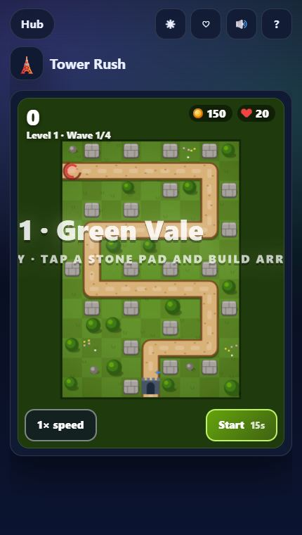
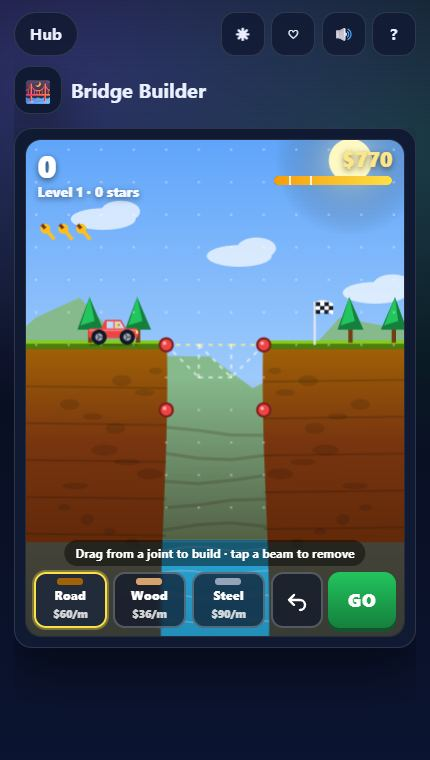
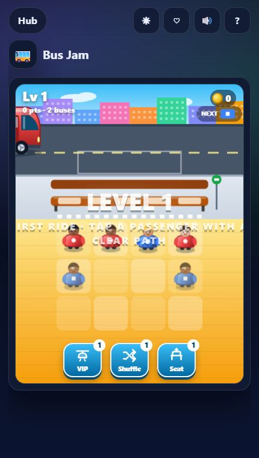
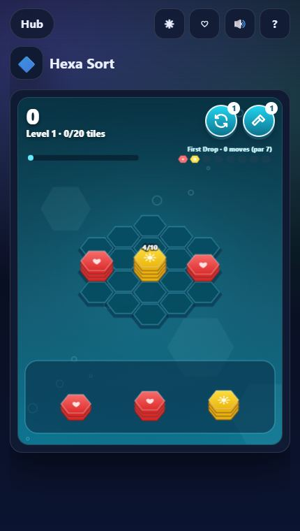
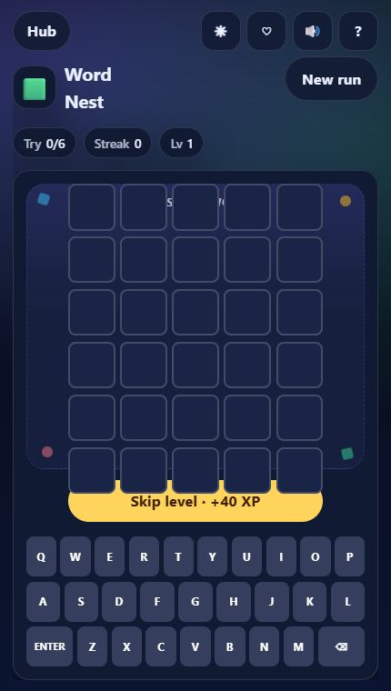
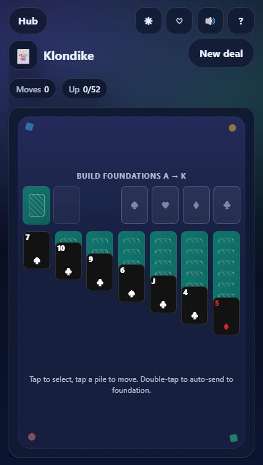
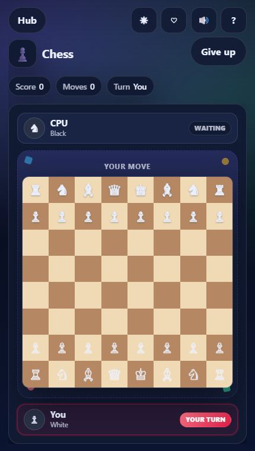
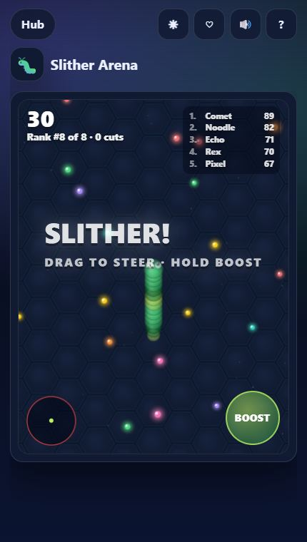
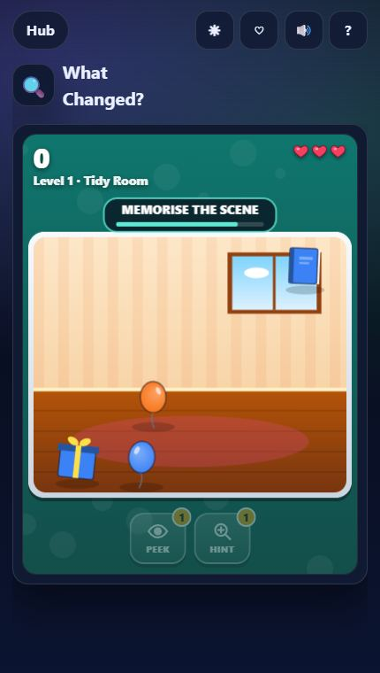

Browser games used to mean tiny Flash toys. In 2026 a phone browser can run smooth physics, glowing neon effects and save your progress without ever touching an app store. We built the TTGO Play Hub around that idea: 140+ free games that load in a second, run on phone or desktop and remember your best scores. Here are twelve to start with, across every mood.
Strategy & building

Tower Rush
Classic tower defense done right. Tap a stone pad and choose Arrow (fast), Cannon (splash), Frost (slows) or Tesla (chain lightning), then upgrade through three tiers as runners, armored tanks, flyers and healers march on your gate.
Tip: flyers skip the path — keep at least one fast Arrow tower near the gate. 30 hand-built maps end with an Ogre King boss every 5th level.

Tiny City
A cosy town-planning puzzle. Houses love parks and water but hate factories; shops need houses; factories like each other. The live preview shows the points before you let go, so every placement is a small decision.
Tip: cluster factories on one edge of the island early, before the good tiles fill up.

Bridge Builder
Lay road, wood and steel beams across a gap, press GO and watch the traffic — beams glow from green to red under load and snap when overloaded. Spending less of the budget earns more stars.
Tip: triangles are your friend. A simple truss under the road beats a pile of loose beams.
Trending puzzles

Bus Jam
Tap passengers with a clear path and they board the bus of their colour — three seats each. The wrong colour waits on a 5-seat bench, and a full bench ends the level.
Tip: look one bus ahead before you tap. We wrote a whole guide to jam puzzles if you get stuck.

Hexa Sort
Drop stacks of hex tiles; neighbours with the same top colour flip together, and ten of one colour burst. It is the most relaxing game on this list — until the board starts filling up.
Word, cards & classics

Word Nest
Guess the five-letter word in six tries: green is right letter, right spot; yellow is right letter, wrong spot. Your win streak grows with every word — and if you are truly stuck, Skip level moves you on.

Klondike
The solitaire everyone knows: build down in alternating colours, move face-up runs together and send cards to the foundations from Ace to King. Empty columns take Kings only — so free one before you need it.

Chess
Full chess rules — castling and promotion included — against a relaxed CPU. Perfect for practising openings on the bus.
Action & arcade

Slither Arena
Grow a glowing worm by eating pellets, then make rivals crash into your body and swallow what they drop. Boosting is fast but burns length, and the red arena wall is deadly.
Tip: circle a smaller worm instead of chasing it head-on.

Jetpack Rush
Hold to fly, release to fall — then dodge zappers, homing missiles (watch the red warning on the right) and charging lasers. New hazards appear every 30 seconds and the zone changes every 500 m.

Beat Tapper
A four-lane rhythm game whose synth songs are generated live, each one a little faster. Perfect hits fill a fever meter for double points; on desktop you can play with D F J K.
Brain games

What Changed?
Study a little room, park or aquarium until the eyes blink — then tap what moved, vanished or changed colour. Later rounds hide two or three changes in busier scenes. More like this in our memory games guide.
Why play in the browser?
- Instant: one tap from a search result to playing — no store page, no 200 MB download.
- Works everywhere: the same game on your phone at lunch and your laptop at night.
- Progress still saves: best scores, missions, upgrades and favourites are kept in your browser.
Ready? Open the Play Hub, filter by category and tap the ♡ on the games you like — they show up under Favorites next time.